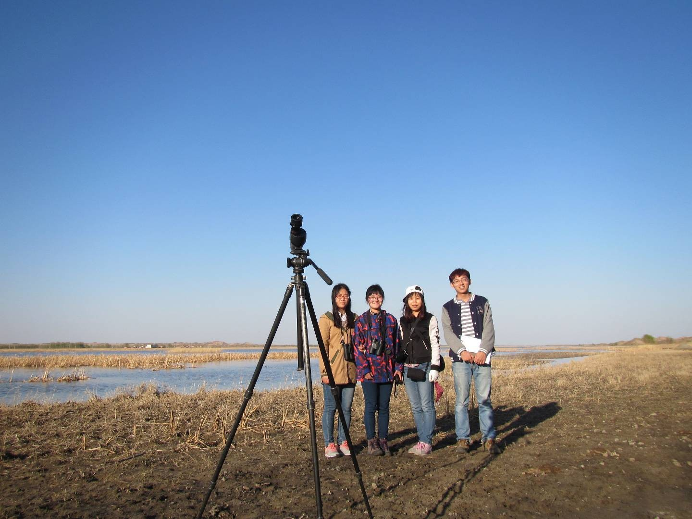
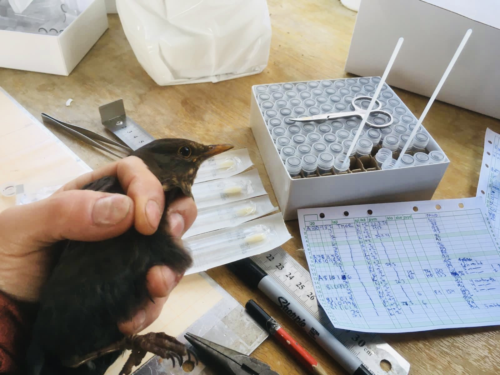

Appointed Docent in Global Change Ecology
Yanjie Xu was awarded the Title of Docent in Global Change Ecology by the University of Turku.
Read story →News & updates
Static preview of the GitHub-generated News archive.
Yanjie Xu was awarded the Title of Docent in Global Change Ecology by the University of Turku.
Read story →
A keynote presentation connecting climate-driven redistribution, migration, and bird conservation.
Read story →
A European study examines pathogenic bacterial taxa in common migratory birds and bats.
Read story →
Satellite tracking revealed a migratory divide and population-specific strategies.
Read story →
A continental study links host life-history strategies to pathogen loads.
Read story →